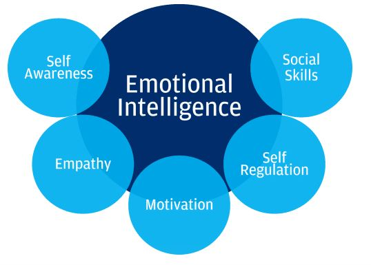
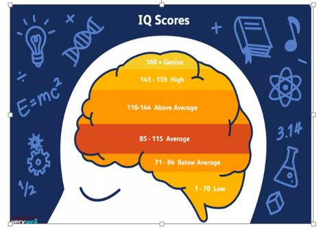
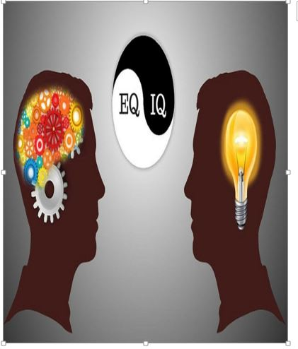

Emotional intelligence is defined as the ability to monitor one's own and other people's emotions by perceiving, using, understanding, and managing. People with a high degree of emotional intelligence know what they're feeling, what their emotions mean, and how these emotions can affect other people
Below diagram shows the five pillars of EI

A few common elements of EQ follows as
• identify emotions in yourself and others
• empathize with other people
• adapt your feelings and behavior to different situations
• control your impulses
• withstand temptations and delay gratification
• resolve conflicts with others
• communicate effectively
IQ stands for intelligence quotient. IQ tests are tools to measure intellectual abilities and potential. They’re designed to reflect a wide range of cognitive skills, such as reasoning, logic, and problem-solving. And EQ is a measure of a person's empathy, social skills etc. It is the person's ability to relate to others.
Below scores helps to ranking person’s IQ

A few common elements of IQ follow as
• use logic to solve problems
• plan and strategize
• understand abstract ideas
• learn and adapt to change
• grasp and use language
Anyone To be successful, emotional intelligence has an importance as great as mathematical intelligence. Therefore, employers are increasingly looking for more people with emotional intelligence. Researchers have shown that our success at work or in life depends on Emotional Intelligence 80% and only20% of intellect. While our intellect help us to resolve problems, to make the calculations or to process information Emotional intelligence (EQ) allows us to be more creative and use our emotions to resolve our problems. Emotional intelligence is the ability to perceive and express, assimilate emotion in thought, understanding the prism of emotions and adjust ourselves and others emotions.
